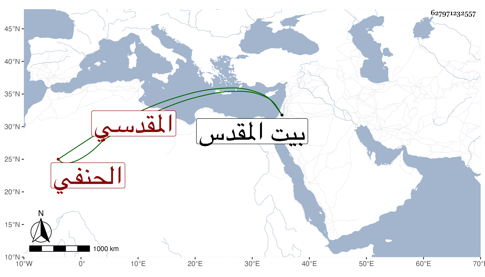

0902Sakhawi.DawLamic.ITO20230111-ara1.EIS1600.627971232557
Biography ID: 627971232557
235
عبد الله بن محمد بن محمد بن عبد الله بن سعد بن أبي بكر بن مصلح ابن أبي بكر بن سعد الجمال بن الشمس بن القاضي الشمس بن الديري المقدسي الحنفي الآتي أبوه وجده . ولد في سنة خمس وثمانمائة وولي قضاء القدس عوضا عن حفيد عمه ناصر الدين محمد المدعو هبة الله بن التاج عبد الوهاب ابن القاضي سعد الدين ثم انفصل عنه وتكررت ولايته له وللخليل وللرملة غير مرة وآخر ما وليها في يوم الاثنين سابع ربيع الأول سنة ثمان وسبعين على مال وسافر فوعك في توجهه بحيث لم يدخل إلا في محفة وما نهض للبس الخلعة حتى مات في يوم الأربعاء حادي عشرى ربيع الثاني منها .
